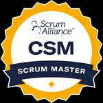
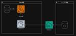
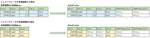
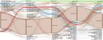

JMDC TECH BLOG
https://techblog.jmdc.co.jp/
JMDCのエンジニアブログです
フィード

認定スクラムマスター研修で最高だったこと 1
1
JMDC TECH BLOG
この記事は JMDC Advent Calendar 2024 10日目の記事です🌲 9日目は大出さんによる JMDCに入社してPMをやっている話 でした。 qiita.com JMDC で Mobile App EngineerとScrum Masterをやっている @mrtry です🍺 ヘルスケアプラットフォーム Pep Up の開発チームでは、開発手法としてスクラムを採用しています。その流れで、株式会社アトラクタさんが行っている認定スクラムマスター研修に参加し、晴れて認定スクラムマスターになりました🥳 本記事では、株式会社アトラクタさんの認定スクラムマスター研修で最高だったことについて紹…
8時間前

AWS Datasync利用時のS3のイベントについて
JMDC TECH BLOG
こんにちは！株式会社JMDCの山岡です。 プロダクト開発部でらくらく健助の開発をしています。 今年、JMDCではアドベントカレンダーに参加しています。 qiita.com 本記事は、JMDC Advent Calendar 2024 8日目の記事です。 今回は社内で進行しているクラウド移行のタスクで詰まった箇所をご紹介致します。 作業内容 AWS Datasyncとは？ S3のイベントとは？ 詰まった箇所 対応方針 まとめ 作業内容 オンプレで構築されているシステムがあり、 それをAWSに移行するタスクの担当を行いました。 仕組み自体は既にあったのでデータベースの一部データを AWS側に持って…
2日前

AWS Glueジョブ（PySpark）でデータ移行した話
JMDC TECH BLOG
データウェアハウス開発部の高野です。現在はオンプレミスの電子カルテデータ基盤のAWS移行のプロジェクトに参画しています。 今年、JMDCではアドベントカレンダーに参加しています。 qiita.com 本記事は、JMDC Advent Calendar 2024 7日目の記事です。 はじめに 電子カルテデータ基盤のAWS移行を進めている中、オンプレミスの旧データ基盤のデータ移行が要件の1つとしてありました。AWSでは主なデータベースとしてAmazon Redshift Serverlessを採用しており、そちらに移行データを連携したい、データ移行に必要なデータ形式が様々だったことからデータ移行は…
3日前
Tableau の代替BI、Graphic Walkerを触ってみた
JMDC TECH BLOG
こんにちは。株式会社JMDC 医療機関支援事業本部の隈部です。 今年、JMDCではアドベントカレンダーに参加しています。 qiita.com 本記事は、JMDC Advent Calendar 2024 6日目の記事です。 この後も記事をどんどん出す予定なので、チェックのほどよろしくお願いいたします！ 普段はDPCデータを使った病院向けのWeb分析サービスを開発しています。 サービスではWeb埋め込み型のtableauを利用していますが、tableau以外のBIツールを触る機会があったので、この記事で紹介させてもらいます。 Graphic Walkerとは？ Graphic WalkerはKa…
4日前
ヘルスコネクト移行とバイタルデータを取得する際に考えたこと 1
JMDC TECH BLOG
こんにちは。株式会社JMDC インシュアランス本部ソリューション部の由利です。 今年、JMDCではアドベントカレンダーに参加しています。 qiita.com 本記事は、JMDC Advent Calendar 2024 5日目の記事です。 はじめに GoogleFitから移行する経緯 開発する要件 Google Fit連携の解除 ヘルスコネクト連携 ヘルスコネクト利用申請 ヘルスコネクトとヘルスケアの違い Fitbitなどのデータソースとヘルスコネクトの違い 扱うデータ粒度について まとめ はじめに 昨年に引き続き、iOS/Android向けPHRアプリの開発を担当しています。 Android…
5日前

埋もれた知識を掘り起こせ！老舗プロダクトを支えるチームのナレッジ継承術 1
JMDC TECH BLOG
この記事はJMDC Advent Calendar 4日目の記事です。 今年もJMDCではアドベントカレンダーに参加しています。 クリスマスまでの25日間、毎日投稿していきますので楽しみにしていてくださいね！ qiita.com こんにちは、JMDCでプロダクトマネージャーを務めている小邦です。製薬本部営業企画推進部とプロダクト開発部分析システムグループを兼務し、『JMDC Data Mart』（以下、JDM）の開発・運営に携わっています。 この記事では、老舗プロダクトであるJDMを次の時代に繋ぐため、私たちのチームが進めているナレッジ継承・共有に向けた取り組みをご紹介します。 JDMの紹介と…
6日前
JMDC 基幹システムにおけるプロジェクトマネジメントの話 1
JMDC TECH BLOG
こんにちは。データウェアハウス開発部の新倉です。 基幹システムのプロジェクトマネージャーを担当しています。 今年、JMDCではアドベントカレンダーに参加しています。 qiita.com 本記事は、JMDC Advent Calendar 2024 3日目の記事です。 はじめに JMDCの基幹システムはデータウェアハウス(以下、DWH)システムを含め、取込、加工など様々なシステムが存在し、保険者・医療機関・薬局など各所に由来する医療データをDWHとして構築しています。 これらはデータ提供や分析サービス、PHRサービスなどで幅広く活用されており、データビジネスの根幹となっています。 今回はそんな基…
7日前

AI時代のweb初学者が心がけていること
JMDC TECH BLOG
こんにちは。JMDCプロダクト開発部で社内向けの運用システムを開発している中澤です。 qiita.com 本記事はJMDCアドベントカレンダー2日目の記事になります。 エンジニアであればキャリアのなかで、まったくさわったことがない言語やサービスを短期間でキャッチアップして開発に入ることはよくあることだと思います。 今回、web開発をほとんど経験してこなかった筆者が、短期間でフロントエンド技術を学んでプロダクト開発を行う機会があったので、開発途中のタイミングではありますが、その経験を言語化し、整理してみます。 背景 学習開始時点の筆者のスキル感については次のような感じです。 エンジニア歴6年 キ…
8日前
部内研修でファシリテーターに挑戦してみた話
JMDC TECH BLOG
こんにちは。データウェアハウス開発部 データレイクグループの吉野です。皆さんはファシリテーターを務めたことはありますか？ データウェアハウス開発部では2ヶ月に1回、部内で研修を行っています。研修では社内講師の講習を聴いて各自が所感や疑問を書き出し、それをもとにグループに分かれてディスカッションを行うのですが、ここで重要な役割を担うのがファシリテーターです。なんとなく避けられがちな役ではありますが、それならばと私がファシリテーターを務めることにしました。 ではそもそもファシリテーターとは何なのか、どのようなことに気をつけるとよいのか、私の体験を交えて紹介していきたいと思います。 ＜目次＞ ファシ…
3ヶ月前
ActiveJobの活用とレビュー時に出会ったRSpec、そして改善
JMDC TECH BLOG
データウェアハウス開発部 医療機関基盤グループでシステム開発をしている堀です。開発中のRuby on Railsのプロジェクトではレビュアーとしてソースを見ることが多いのですが、なかでもActiveJobとそのユニットテストとなるRSpecを見ていて思うことがあったので記事にします。 ActiveJobといけてないRSpec ActiveJobはRailsのフレームワークで用意された仕組みです。非同期実行できるのでAWSのRedshiftやAthenaといったレスポンスに時間がかかるサービスを呼び出す処理に利用しています。 システム構成イメージ ActiveJobでRedshift/Athen…
3ヶ月前
GA4データの自動取得をGASでやってみた
JMDC TECH BLOG
こんにちは！株式会社JMDCの黄です。 プロダクト開発部で受診勧奨サービスのプロダクト開発とPep Upのバックエンドエンジニアをしています。 GoogleスプレッドシートからGA4のデータを取得するためのカスタムGASスクリプトのサンプルを作成してみました。 この記事では、そのスクリプトのポイントを解説します。 背景 私がいるチームでは、運営中のWebサイトの一部をGoogle Analyticsを使って分析しています。昨年からGoogle AnalyticsをユニバーサルアナリティクスからGoogleアナリティクス4（GA4）に移行しました。 これまで、ユニバーサルアナリティクスのデータを…
3ヶ月前
GoでAmazon Cognito認証を実装してみた
JMDC TECH BLOG
みなさん、こんにちは！プロダクト開発部の西原です。 現在、製薬企業向けに提供しているヘルスビッグデータの分析を行うプロダクトであるJMDC Data Martのバックエンドの開発を担当しています。 プロダクト開発している中で、Go言語でAmazon Cognitoを使った認証を実装しました。今回は基本的な実装方法をぜひ共有させていただければと存じます。 Amazon Cognitoとは Amazon Cognito（以下、Cognito）は、ウェブおよびモバイルアプリケーション向けのユーザー認証とアクセス管理を提供するAWSのサービスです。これにより、ユーザーはアプリケーションに対して簡単にサ…
4ヶ月前
GraphQL RubyのSentryTraceを使ってみました！
JMDC TECH BLOG
こんにちは。@dtaniwakiこと谷脇です。 github.com 私は現在は産業保健向けのサービス「 Pep Up for WORK」の開発に携わっています。Pep Up for WORKは社員１人１人を元気にし、活気ある組織作りを実現することを目的としたサービスです。 lp.pepup.work さて突然ですが、みなさんトレース使ってますか？ご存知の方も多いと思いますが、トレースはObservability（可観測性）の構成要素の一つで、他にはメトリクスやログとともにサービスを運用する上で非常に重要な技術です。 Pep Up for WORKでももちろん使っていて、集約・可視化にはSen…
6ヶ月前
JMDC Tech BlogのBluesky公式アカウントを開設しました
JMDC TECH BLOG
X (旧Twitter)のアカウントと合わせてJMDCの技術情報を発信していきます。 ぜひ、フォローをお願いします！ bsky.app
7ヶ月前
Implementation of Victory charts library
JMDC TECH BLOG
img { display:block; float:none; margin-left:auto; margin-right:auto; } Hello, my name is Fauquez Rodolphe, I am a React Native mobile engineer currently working on the redesign of the Pep Up mobile application. Today I would like to tell you about when I had to integrate charts into React Native ap…
8ヶ月前
CTOからICへの転身はできなかったけど楽しく組織改善やってますという話
JMDC TECH BLOG
こんにちは。プロダクト開発部の小原です。 本記事はJMDC Advent Calendar 2023 25日目の記事です。 JMDCでは今年初めてAdvent Calendarに参加しましたが、無事完走できて良かったです。 qiita.com 最終日の記事ということで、軽めに入社してからのことを振り返ろうと思います。 背景 入社当時 入社当時は、プロダクトインキュベーション室という新規立ち上げを行う部門に配属されました。 前職・前々職とシリコンバレーのスタートアップの創業メンバーとして立ち上げを経験したので、その経験が活かせるかと思い入社を決めました。 当時は前職がそれなりの規模になってきてい…
1年前
サーベイメール一斉送信の負荷対策
JMDC TECH BLOG
こんにちは。@dtaniwakiこと谷脇です。 今年、JMDCではアドベントカレンダーに参加しています。 qiita.com 本記事は、JMDC Advent Calendar 2023 24日目の記事です。 私は産業保健向けのサービス「Pep Up for WORK」の開発に携わっています。「Pep Up for WORK」は社員一人ひとりを元気にし、活気ある組織作りを実現することを目的としたサービスです。 Pep Up for WORKの機能の１つとして、パルスサーベイというものがあります。継続的に簡易的なアンケートを取得することで、組織や従業員のリアルタイムな状態の変化を把握し、組織の改…
1年前
Valibot と同じ作者のフォームライブラリ Modular Forms を試してみた
JMDC TECH BLOG
はじめに こんにちは。株式会社 JMDC の川根です。 プロダクト開発部で製薬企業向けサービスの web フロントエンドの設計・開発を担当しています。 本記事は、JMDC Advent Calendar 2023 23 日目の記事です。 qiita.com 現在、上記サービスのフロントエンドの堅牢性やメンテナビリティを向上させるため、リアーキテクト・リファクタリングに取り組んでいます。 それに伴い、フォームのスキーマ検証に使用している Yup をより Type Safe な Zod や Valibot へ置き換えることを検討していました。 Zod を業務で使用したことはありますが、Valibo…
1年前
ExpoのCustom Dev Menuでデバッグ作業をラクにする
JMDC TECH BLOG
こんにちは！プロダクト開発本部の山本です！モバイルアプリエンジニアやEMをやっています🏋🏾♀️ この記事は、JMDC Advent Calendar 2023 22日目の記事です🌲 qiita.com また、ここ記事はReact Native Advent Calendar 2023 22日目の記事でもあります🌲 qiita.com JMDCでは、モバイルアプリ開発にReact Nativeを採用しています。 pepup.life また、Pep UpのモバイルアプリをVanillaなReact NativeからExpoに絶賛Replace中です。開発中にデバッグメニュー的なの欲しいなぁ〜と思…
1年前
デザインシステムめっちゃ見る④ スペーシング編
JMDC TECH BLOG
こんにちは。株式会社JMDCでヘルスケアプラットフォームサービス【Pep Up】 のフロントエンドエンジニアをしている新保です。 今年、JMDCではアドベントカレンダーに参加しています。 qiita.com 本記事は、JMDC Advent Calendar 2023 21日目の記事です。 現在、デザインシステムの導入に向けて動いている【Pep Up】。そのフロントエンジニアが他社のデザインシステムを隅々までリサーチし、「使いやすいデザインシステム」のポイントがどこにあるのか探り出そう！という企画です。 今回は全4回のラスト！最後は、スペーシングについて深掘りしていきます。 1～3回目の記事は…
1年前
「Webデザイナー」、おぼえていますか
JMDC TECH BLOG
はじめに こんにちは。株式会社JMDC プロダクト開発部の蘇です。主にWebとアプリの画面仕様の設計とUI/UXデザインを担当しています。 今年、JMDCではアドベントカレンダーに参加しています。 qiita.com 本記事は、JMDC Advent Calendar 2023 20日目の記事です。 現在、JMDCのヘルスケアプラットフォームサービスである【Pep Up】ではデザインシステム導入に向けて動いており、さらなるサービス品質向上とユーザビリティの改善に向けて力を入れております。 その構築に関わっているデザイナーとして、デザインシステムについて取り上げるべきかなと思ったのですが、書いて…
1年前
ID認証のOSS、Oryをさわってみた
JMDC TECH BLOG
みなさん、こんにちは！株式会社JMDCでプロダクト開発部に所属し、バックエンドの開発を担当している吉川（@yoshiyu0922）です。 今年、JMDCではアドベントカレンダーに参加しています。 qiita.com 本記事は、JMDC Advent Calendar 2023 19日目の記事です。 認証を実現する場合にCognitoやFirebaseなどIDaaSを利用することが多いと思いますが、KeycloakやzitadelなどOSSも多数存在しています。今回は技術検証の一環で、Oryをさわってみたので所感を書いていこうと思います。 Oryとは？ Oryとは認証・認可を提供するOSSでモジ…
1年前
Ginkgoを使ってGoをテストしてみた
JMDC TECH BLOG
こんにちは。プロダクト開発部の西原です。 現在、JMDCが保有しているヘルスビッグデータを活用して生活者や医療に新しい価値を提供する新規プロダクト開発チームのバックエンドを担当しております。 今年、JMDCではアドベントカレンダーに参加しています。 qiita.com 本記事は、JMDC Advent Calendar 2023 18日目の記事です。 開発を進めていく中でどうテストを行っていくか、どのテストフレームワークを使用するか検討することは、よくあるのではないでしょうか。 新規プロダクトのバックエンドはGo言語で開発しており、今回”Ginkgo”と呼ばれるテストフレームワークを導入しまし…
1年前
スタートアップの開発責任者から上場ベンチャーのPdMに転身して1年を振り返る
JMDC TECH BLOG
こんにちは、こんばんは。株式会社JMDC 製薬本部企画部 兼 プロダクト開発部の小邦です。 当社が製薬企業向けに提供しているヘルスビッグデータの分析を行えるプロダクトであるJMDC Data Mart（愛称：JDM）のプロダクトマネージャー（以下、PdM）を務めています。JDMは提供16年目を迎えたご長寿プロダクトで、今なお社内における売上貢献度が高い重要なプロダクトの1つです。 今年、JMDCではアドベントカレンダーに参加しています。 qiita.com この記事はJMDC Advent Calendar 17日目の記事です。 記事を書いているのは2023年12月1日。昨年の12月1日に入社…
1年前
Google Fitで歩数を取得するための手続きが大変だった話
JMDC TECH BLOG
こんにちは。株式会社JMDC インシュアランス本部ソリューション部の由利です。 今年、JMDCではアドベントカレンダーに参加しています。 qiita.com 本記事は、JMDC Advent Calendar 2023 16日目の記事です。 私は、iOS/Android向けPHRアプリの開発を担当しています。 現在開発しているアプリの機能の1つとして、歩数等を端末から取得して表示するものがあります。 AndroidはGoogle Fit経由で取得しているのですが、Google Fitを使うための手続きに結構な手間がかかりました。 本記事では、時系列でその流れを振り返ってみます。 モバイルアプリ…
1年前
デザインシステムめっちゃ見る③-2 カラー編 (後編)
JMDC TECH BLOG
こんにちは。株式会社JMDCでヘルスケアプラットフォームサービス【Pep Up】 のフロントエンドエンジニアをしている新保です。 今年、JMDCではアドベントカレンダーに参加しています。 qiita.com 本記事は、JMDC Advent Calendar 2023 15日目の記事です。 現在、デザインシステムの導入に向けて動いている【Pep Up】。そのフロントエンジニアが他社のデザインシステムを隅々までリサーチし、「使いやすいデザインシステム」のポイントがどこにあるのか探り出そう!! という企画です。 今回は、全4回の3回目、カラー編の後編です。前編に引き続き、デザインシステムの「色」に…
1年前
デザインシステムめっちゃ見る③-1 カラー編 (前編)
JMDC TECH BLOG
こんにちは。株式会社JMDCでヘルスケアプラットフォームサービス【Pep Up】 のフロントエンドエンジニアをしている新保です。 今年、JMDCではアドベントカレンダーに参加しています。 qiita.com 本記事は、JMDC Advent Calendar 2023 14日目の記事です。 現在、デザインシステムの導入に向けて動いている【Pep Up】。そのフロントエンジニアが他社のデザインシステムを隅々までリサーチし、「使いやすいデザインシステム」のポイントがどこにあるのか探り出そう!! という企画です。 今回は、全4回の3回目。デザインシステムの「色」について、比較・分析を行っていきます。…
1年前
Devise のセッション有効期限と Timeoutable, Rememberable の設定次第で意図しない挙動になることについて
JMDC TECH BLOG
初めて JMDC TECH BLOG を書きました。 株式会社 JMDC で Pep Up 開発チームのバックエンドを担当している土橋と申します。 今年、JMDCではアドベントカレンダーに参加しています。 qiita.com 本記事は、JMDC Advent Calendar 202313日目の記事です。 弊社の『健康状態を可視化し、楽しみながら健康知識が身につくツール』Pep Up 、本記事を読んでくださっている方に利用されている方はいらっしゃいますでしょうか。 Pep Up は2016年に開始されたサービスで、当初からバックエンドに Ruby on Rails を採用しています。 認証には…
1年前